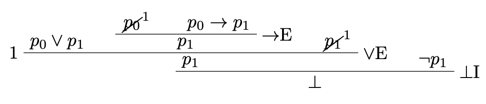

Soundness and Completeness
Semantic Consequence
Let \(\sigma\) be a signature, \(\psi\) a formula of \(LP(\sigma)\) and \(\Gamma\) a set of formulas from \(LP(\sigma)\).
- We say that a \(\sigma\)-structure \(A\) is a model of \(\Gamma\) if \(A^*(\varphi)=\mathsf{T}\) for all \(\varphi\in\Gamma\).
- We write \(\Gamma\models\psi\) to mean that for every \(\sigma\)-structure \(A\), if \(A\) is a model of \(\Gamma\), then \(A\) is a model of \(\psi\). We write \(\Gamma\not\models\psi\) when thre is some \(\sigma\)-structure \(A\) such that \(A\) is a model of \(\Gamma\) but \(A\) is not a model of \(\psi\).
Suppose that \(\sigma\) is a signature and that \(\Gamma\) is a set of formulas of \(LP(\sigma)\) and \(\varphi\) is a formula of \(LP(\sigma)\).
Satisfiable
A set of formulas \(\Gamma\) is satisfiable if there is a model \(A\) such that \(A^*(\psi)=\mathsf{T}\) for all \(\psi\in\Gamma.\)
A set of formulas \(\Gamma\) is unsatisfiable when there is no model \(A\) such that \(A^*(\psi)=\mathsf{T}\) for all \(\psi\in\Gamma\).
Example
The set \(\{p_0\vee p_1, \neg p_1, p_0\rightarrow p_1\}\) is unsatisfiable: Any model that makes \(p_0\vee p_1\) and \(\neg p_1\) true, must also make \(p_0\) true. But, if \(p_0\) is true and \(p_0\rightarrow p_1\) is true, then \(p_1\) must be true. Thus, any model that makes all the formulas true, makes \(p_1\) true and \(\neg p_1\) true, which is impossible. We can also verify that the set is unsatisfiable by considering all possible models of the set:
- When \(A(p_0) = \mathsf{T}\), \(A(p_1)=\mathsf{T}\), we have \(A^*(\neg p_1)=\mathsf{F}\)
- When \(A(p_0) = \mathsf{T}\), \(A(p_1)=\mathsf{F}\), we have \(A^*(p_0\rightarrow p_1)=\mathsf{F}\)
- When \(A(p_0) = \mathsf{F}\), \(A(p_1)=\mathsf{T}\), we have \(A^*(\neg p_1)=\mathsf{F}\)
- When \(A(p_0) = \mathsf{F}\), \(A(p_1)=\mathsf{F}\). we have \(A^*(p_0\vee p_1) = \mathsf{F}\)
So, \(\Gamma\) is unsatisfiable when for every model \(A\), there is some \(\psi\in\Gamma\) such that \(A^*(\psi)=\mathsf{F}\).
Inconsistency
A set of formulas \(\Gamma\) is inconsistent if \(\Gamma\vdash\bot\). A set of formulas \(\Gamma\) is consistent when \(\Gamma\) is not inconsistent, i.e., \(\Gamma\not\vdash \bot\).
Example
The set \(\{p_0\vee p_1, \neg p_1, p_0\rightarrow p_1\}\) is inconsistent: We have that \(\{p_0\vee p_1, \neg p_1, p_0\rightarrow p_1\}\vdash\bot\), as shown by the following derivation.

Note
The book uses the phrase "syntactic inconsistency" rather than "inconsistency" (see Definition 3.10.2). This is because they use "consistent" to mean "satisfiable" and "inconsistent" to mean "unsatisfiable" (see Definition 3.5.8 part (b) and (c)).
Soundness Theorem
Soundness Theorem
Let \(\sigma\) be a signature and suppose that \(\Gamma\) is a set of \(LP(\sigma)\) formulas and \(\varphi\) is \(LP(\sigma)\) formula. If \(\Gamma\vdash\varphi\) then \(\Gamma\models\varphi\).
The proof of soundness is by induction on the height of a derivation. See Theorem 3.9.2 for the proof.
Completeness Theorem
Completeness Theorem
Let \(\sigma\) be a signature and suppose that \(\Gamma\) is a set of \(LP(\sigma)\) formulas and \(\varphi\) is \(LP(\sigma)\) formula. If \(\Gamma\models\varphi\) then \(\Gamma\vdash\varphi\).
We first note the following two observations:
-
\(\Gamma\vdash\varphi\) if and only if \(\Gamma\cup \{\neg\varphi\}\) is inconsistent.
Proof. Suppose that \(\Gamma\vdash\varphi\). So there is a derivation \(D\) where the root is left labeled with \(\varphi\) and undischarged assumptions are from \(\Gamma\). We can show that \(\Gamma\cup \{\neg\varphi\}\vdash\bot\) as follows: Add a new root to \(D\) left labeled with \(\bot\). The left child of the root is the derivation \(D\) and the right child is \(\neg\varphi\). Right label the root with \(\bot\)E. This is a derivation of \(\bot\) with undsicharged assumptions from \(\Gamma\cup\{\neg\varphi\}\).
Suppose that \(\Gamma\cup \{\neg\varphi\}\) is inconsistent. Then, \(\{\Gamma\cup\{\neg\varphi\}\vdash \bot\). So, there is a derivation \(D\) with the root left labeled with \(\bot\) and \(\neg\varphi\) may occurr in \(D\) as an undischarged assumption. To turn \(D\) into a derivation of \(\varphi\), add a node left labeled with \(\varphi\) below \(\bot\) (the current root of \(D\)), right label the new node with RAA and add a dandah to any leaf left labeled with \(\neg\varphi\).
-
\(\Gamma\models\varphi\) if and only if \(\Gamma\cup\{\neg\varphi\}\) is unsatisfiable.
Proof. Suppose that \(\Gamma\models\varphi\). Then, for every model \(A\), if \(A\) is a model of \(\Gamma\), then \(A^*(\varphi)=\mathsf{T}\). If there is no model of \(\Gamma\), then there is no model of \(\Gamma\cup\{\varphi\}\), and so, \(\Gamma\cup\{\varphi\}\) is unsatisfiable. So, we can assume that there is a model \(A\) of \(\Gamma\). If \(A\) is a model of \(\Gamma\), then since \(\Gamma\models\varphi\), \(A^*(\varphi)=\mathsf{T}\). Hence \(A^*(\neg\varphi)=\mathsf{F}\). Hence, \(A\) is not a model of \(\Gamma\cup\{\neg\varphi\}\). Therefore, \(\Gamma\cup\{\neg\varphi\}\) is unsatisfiable.
Suppose that \(\Gamma\cup\{\neg\varphi\}\) is unsatisfiable. If \(\Gamma\) is unsatisfiable, then \(\Gamma\models\varphi\). Suppose that \(\Gamma\) is satisfiable. Let \(A\) be a model of \(\Gamma\). Then, since \(\Gamma\cup\{\neg\varphi\}\) is unsatisfiable and \(A^*(\psi)\) for all \(\psi\in\Gamma\), we must have \(A^*(\neg\varphi)=\mathsf{F}\). Hence, \(A^*(\varphi)=\mathsf{T}\). Therefore, \(\Gamma\models\varphi\).
The completeness theorem states that for all \(\Gamma\) and \(\varphi\), if \(\Gamma\models\varphi\) then \(\Gamma\vdash\varphi\). We prove the contraposition: If \(\Gamma\not\vdash\varphi\), then \(\Gamma\not\models\varphi\). We argue as follows:
- \(\Gamma\not\vdash\varphi\) iff \(\Gamma\cup\{\neg\varphi\}\) is not inconsistent iff \(\Gamma\cup\{\neg\varphi\}\) is consistent.
- Using Definitions 3.10.4, Lemmas 3.10.5 and 3.10.6, we have that \(\Gamma\cup\{\neg\varphi\}\) is consistent implies that there is a \(\Delta\) such that \(\Gamma\cup\{\neg\varphi\}\subseteq \Delta\) and \(\Delta\) is satisfiable. So, \(\Gamma\cup\{\neg\varphi\}\) is satisfiable.
- \(\Gamma\cup\{\neg\varphi\}\) is satisfiable iff \(\Gamma\not\models \varphi\)
To illustrate the above proof, suppose that \(\{p\rightarrow q, \neg p, q\vee r, r\wedge s\}\not\vdash \neg q\wedge s\). This means that \(\{p\rightarrow q, \neg p, q\vee r, r\wedge s\}\cup \{\neg(\neg q\wedge s)\} = \{p\rightarrow q, \neg p, q\vee r, r\wedge s, \neg(\neg q\wedge s)\}\) is consistent. How can we argue that \(\{p\rightarrow q, \neg p, q\vee r, r\wedge s, \neg(\neg q\wedge s)\}\) is satisfiable?
To simplify our dsicussion, restrict the language of \(LP(\sigma)\) so that the only connectives are \(\wedge\) and \(\neg\).
Hintikka Set
A Hintikka set for the restricted language is a set \(\Gamma\) of formulas such that:
- If \((\varphi\wedge\psi)\in\Gamma\), then \(\varphi\in\Gamma\) and \(\psi\in\Gamma\),
- If \(\neg(\varphi\wedge\psi)\in\Gamma\), then either \(\neg\varphi\in\Gamma\) or \(\neg\psi\in\Gamma\),
- If \((\neg(\neg\varphi)) \in\Gamma\), then \(\varphi \in\Gamma\).
- \(\bot\not\in\Gamma\).
- There is no propositional symbol \(p\) such that both \(p\) and \((\neg p)\) are in \(\Gamma\).
Example
\(\Gamma=\{p_0\wedge \neg(p_1\wedge\neg p_2), p_0, \neg(\neg p_3\wedge\neg p_4)\}\) is not a Hintikka set:
- \(p_0\wedge \neg(p_1\wedge\neg p_2)\in \Gamma\) but \(\neg(p_1\wedge\neg p_2)\not\in\Gamma\).
- \(\neg(\neg p_3\wedge\neg p_4)\in \Gamma\) but \(\neg\neg p_3\not\in\Gamma\) and \(\neg\neg p_4\not\in\Gamma\).
The following are Hintikka sets containing \(\Gamma\):
- \(\{p_0\wedge \neg(p_1\wedge\neg p_2), p_0, \neg(p_1\wedge\neg p_2), \neg p_1, \neg(\neg p_3\wedge\neg p_4), \neg\neg p_3, p_3\}\)
- \(\{p_0\wedge \neg(p_1\wedge\neg p_2), p_0, \neg(p_1\wedge\neg p_2), \neg p_1, \neg(\neg p_3\wedge\neg p_4), \neg\neg p_4, p_4\}\)
- \(\{p_0\wedge \neg(p_1\wedge\neg p_2), p_0, \neg(p_1\wedge\neg p_2), \neg\neg p_2, p_2, \neg(\neg p_3\wedge\neg p_4), \neg\neg p_3, p_3\}\)
- \(\{p_0\wedge \neg(p_1\wedge\neg p_2), p_0, \neg(p_1\wedge\neg p_2), \neg\neg p_2, p_2, \neg(\neg p_3\wedge\neg p_4), \neg\neg p_4, p_4\}\)
Step 2 of the proof of completeness follows from two key observations about Hintikka sets:
- If \(\Gamma\) is a Hintikka set, then \(\Gamma\) is satisfiable.
- If \(\Gamma\) is consistent, then there is a Hintikka set \(\Delta\) such that \(\Gamma\subseteq \Delta\).
An important consequence of the soundness and completeness theorems is the Compactness Theorem.
Compactness
Suppose that \(\Gamma\) is a (possibly infinite) set of formulas of \(LP(\sigma)\). If every finite subset of \(\Gamma\) is satisfiable, then \(\Gamma\) is satisfiable.
Proof. Suppose that \(\Gamma\) is not satisfiable. Then, by the completeness theorem, \(\Gamma\) is inconsistent. Hence, there is a derivation of \(\bot\) with undischarged assumption from \(\Gamma\). Since derivations are finite, there is a finite \(\Gamma_0\) such that \(\Gamma_0\subseteq \Gamma\) and \(\Gamma_0\) is inconsistent. By the soundness theorem, \(\Gamma_0\) is not satisfiable. Hence, it is not true that every finite subset of \(\Gamma\) is satisfiable.
Exercises
The tutorial questions are available at https://umd.instructure.com/courses/1301043/assignments/5538726